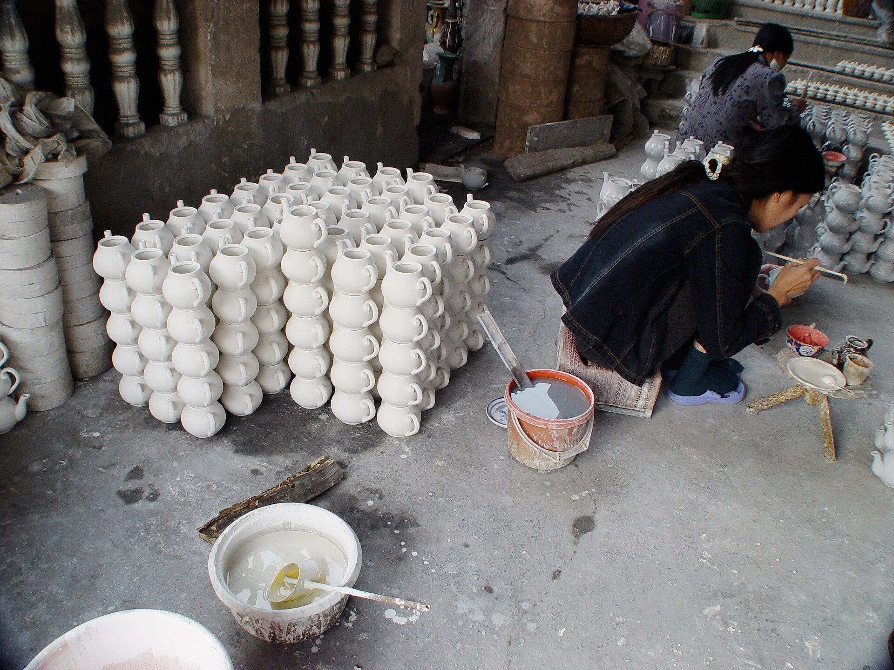

TƯ LIỆU HÌNH ẢNH · 0101 / 07 LÀNG NGHỀ · GIA LÂM
Đất sông Hồng
qua bàn tay.
Bên bờ sông Hồng, những lớp đất sét được nhào, vuốt và nung thành đồ dùng, đồ thờ, vật trang trí. Bát Tràng giữ nhịp nghề qua nhiều thế hệ; mỗi dáng gốm là một dấu tay riêng.
ĐẤT · NƯỚC · LỬAĐI TIẾP ↘